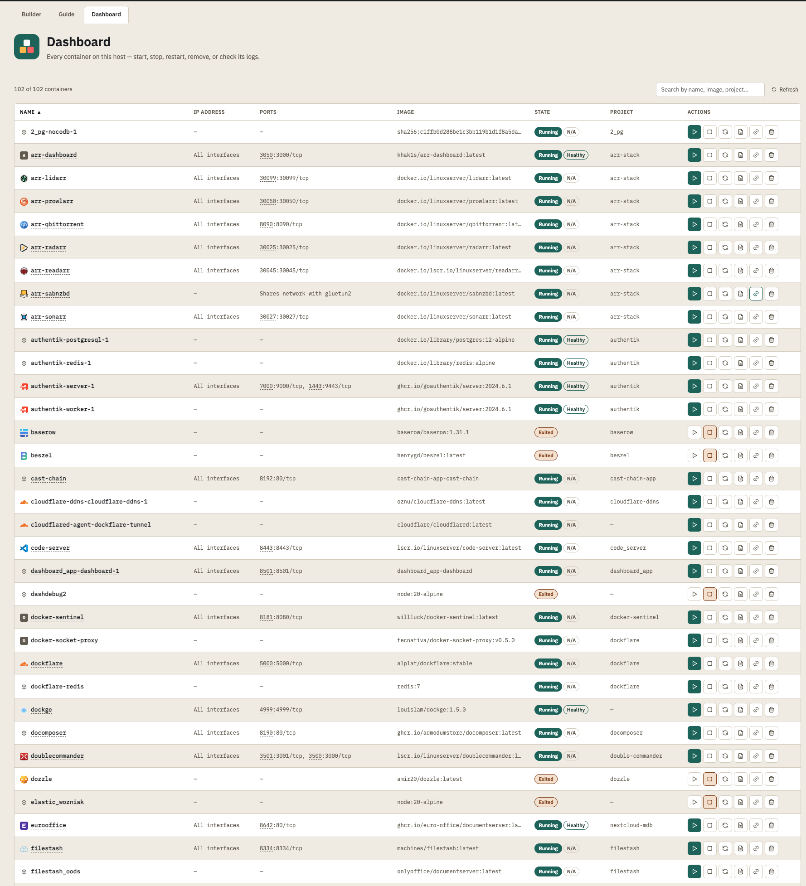
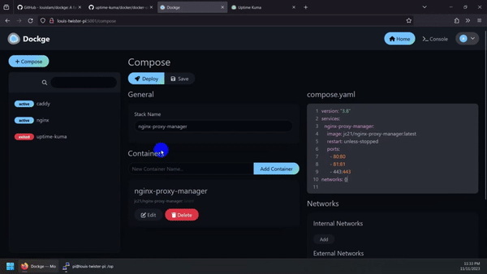
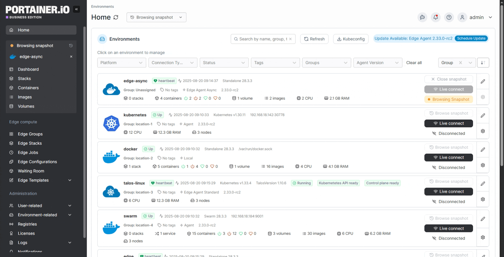

What is Docker?
Normally, installing a piece of software means it gets tangled up with everything else on your computer — shared libraries, specific versions, config files scattered around. Docker sidesteps that by packaging an application together with everything it needs into a single, self-contained unit called a container. A container behaves the same on your machine as it does on anyone else's, because it's not relying on whatever happens to already be installed there.
Each service you pick in this tool — Nextcloud, Pi-hole, Jellyfin, whatever — runs in its own container. Containers are cheap to create and destroy: if something goes wrong, you can throw one away and start fresh without it having touched anything else on your system. That's why Docker is so popular for homelabs — you can run a dozen different services on one machine without them interfering with each other.
This tool generates the two things Docker needs to start a container: a docker-compose.yml file (a recipe describing which containers to run and how they're configured) and an .env file (the settings that recipe fills in, like passwords and folder paths). It can also generate the equivalent as a set of plain docker run commands, if you'd rather see exactly what's happening step by step.
Installing Docker
You only need to do this once per machine. Pick your OS:
Windows
- Requires Windows 10/11 (64-bit) with WSL2, which the installer sets up for you if it's missing.
- Install Docker Desktop — search "Docker Desktop" from Docker's official site, or start at docs.docker.com/get-started/get-docker and follow the Windows instructions there.
- Launch Docker Desktop and wait for it to say "Docker Desktop is running" (the whale icon in your system tray stops animating).
- Open a terminal (PowerShell, Windows Terminal, or WSL) and run
docker --versionto confirm it's working.
macOS
- Install Docker Desktop for Mac from the same docs.docker.com/get-started/get-docker page — pick the Apple Silicon or Intel build depending on your Mac.
- Open Docker from Applications and wait for the whale icon in the menu bar to settle.
- Open Terminal and run
docker --versionto confirm it's working.
Linux
- Linux doesn't need Docker Desktop — just the Docker Engine. The most reliable way is your distro's own package manager; see docs.docker.com/engine/install for exact steps per distro.
- For a quick setup on most distros, Docker also publishes a convenience script:
curl -fsSL https://get.docker.com | sh - Add your user to the
dockergroup so you don't needsudofor every command, then log out and back in for it to take effect:sudo usermod -aG docker $USER - Make sure Docker starts on boot:
sudo systemctl enable --now docker - Confirm it's working:
docker --versionanddocker compose version.
Running a docker-compose.yml (recommended)
This is the easiest way to manage the services you build here — one file, one set of commands.
- Pick your services on the main page, adjust anything you need in Settings, then click Download compose file and Download .env (or Download all as .zip if you're using "Separate file per service").
-
Create a new, empty folder somewhere you'll find it again — for example a
homelabfolder in your Documents, with one sub-folder per service so their files don't mix (homelab/nextcloud,homelab/pihole, and so on). Both downloaded files land in your browser's default Downloads folder, so movedocker-compose.ymland.envfrom there into the new folder:- Windows: open File Explorer, go to
Downloads, select both files, right-click → Cut, then open your new folder and right-click → Paste. Dragging both files across works just as well. - macOS: open Finder, go to
Downloads, select both files, press⌘Cto copy, then open the new folder and press⌘⌥V(Cmd+Option+V) to paste the files there and remove them from Downloads. - Linux: drag them across in your file manager the same way, or from a terminal
(adjust the paths to match your folder names):
mv ~/Downloads/docker-compose.yml ~/Downloads/.env ~/homelab/nextcloud/
Heads up: because.envstarts with a dot, Finder and most Linux file managers treat it as a hidden file and won't list it by default. If it seems to have vanished after moving files, toggle hidden files on —⌘⇧.(Cmd+Shift+Period) in Finder, orCtrl+Hin most Linux file managers. Windows File Explorer shows it normally, no extra step needed there. - Windows: open File Explorer, go to
- Open a terminal in that folder and start everything:
Thedocker compose up -d-druns it in the background so your terminal is free afterward. - Check that things are running:
docker compose ps - Watch the logs if something looks wrong:
(docker compose logs -fCtrl+Cto stop watching — this doesn't stop the containers.) - Stop everything when you're done:
Your data stays on disk in the folders this tool set up. Adddocker compose down-vonly if you also want to delete that data — this is permanent, so only use it if you mean it.
Running a docker run script
Each output card also has a docker run tab next to the compose file — the same setup, written as plain commands instead of a compose recipe. It's more manual, but it's a good way to see exactly what Docker is doing under the hood, which can help while you're still learning.
- Download the .env file the same way as above.
- Click the docker run tab, copy its contents, and save them into a file named
run.shin the same folder as the.envfile. - Make the script executable (Linux/macOS, or WSL/Git Bash on Windows):
chmod +x run.sh - Run it:
./run.sh - To stop a container started this way:
docker stop <container-name>, anddocker rm <container-name>to remove it afterward. Compose does both of these for every container at once with a singledocker compose down— one of the reasons it's the easier option once you're comfortable with the basics.
Opening your app in a browser
Once a container is running, most services (anything this tool labels "Web UI" in its port list) are just a normal website running on your machine. You reach them the same way you'd reach any other site — by typing an address into your browser — except the address points at a port number instead of a domain name.
-
Find the host port next to "Web UI" in the compose file this tool generated — for example, Jellyfin
publishes on port
8096by default. -
If your browser is on the same machine Docker is running on, go to
http://localhost:8096(swap in whatever port your service uses). -
If you're connecting from another device — your phone, another computer on the same
Wi-Fi — use that machine's local IP address instead of
localhost, e.g.http://192.168.1.20:8096. Find the IP address on the machine running Docker:- Windows: open Command Prompt and run
ipconfig— look for "IPv4 Address". - macOS: System Settings → Wi-Fi/Network → Details, or run
ipconfig getifaddr en0in Terminal. - Linux: run
hostname -Iorip addrin a terminal.
- Windows: open Command Prompt and run
depends_on: … condition: service_healthy for their
database/cache container, backed by a healthcheck: on that container — not just
"the database's container process has started," which can still be a few seconds before it's actually
accepting connections. This only applies to the generated docker-compose.yml; the plain
docker run script still starts the database first, just without waiting for it to report
healthy, since docker run has no equivalent to Compose's health-based ordering.
Checking for port conflicts with what's already running
The builder already catches port conflicts among the services you're picking — if two of them both want port 80, it moves one and shows a warning. If you're self-hosting this tool with the Docker socket mounted in (already set up if you deployed it with the compose file this project ships), it goes a step further: a small line above the "One combined file" / "Separate file per service" toggle shows how many ports are currently in use on that host, and any service you pick that collides with one of them gets moved and flagged too — the warning names the actual running container, not just "already taken".
If that line instead says port checking is unavailable, the socket isn't mounted for this container.
Add it to this tool's own docker-compose.yml:
services:
compose-builder:
image: ghcr.io/admodumstore/docomposer:latest
container_name: docomposer
restart: unless-stopped
ports:
- "8190:80"
volumes:
- /var/run/docker.sock:/var/run/docker.sock
Even with the socket mounted, there's one thing the Docker API genuinely can't tell it: ports used by
a container running with network_mode: host, or by anything that isn't Docker at all.
A second, separately optional mount closes that gap — it lets the poller read the host's real network
state directly instead of only asking Docker about it:
services:
compose-builder:
image: ghcr.io/admodumstore/docomposer:latest
container_name: docomposer
restart: unless-stopped
ports:
- "8190:80"
volumes:
- /var/run/docker.sock:/var/run/docker.sock
- /proc:/host/proc:roIt's read-only, and only ever used to read port numbers — but it is more visibility into the host, so it's worth adding deliberately rather than by default.
By default, a published port binds every network interface on the host — not just the
one you're thinking of. If a service is only ever meant to be reached from this machine itself, or only
from your own LAN, that's often more exposure than intended. Next to each port in the Settings panel
there's an optional bind IP field, shown as ip:port — leave it blank for
the current "every interface" default, set it to 127.0.0.1 to keep a port local-only, or
to a specific address (e.g. 192.168.1.50) to limit it to one interface. The same host port
number can be reused across different bind IPs without conflicting — DoComposer only flags a real
conflict (same port and the same IP, or either side left as "every interface").
Deploying straight from the browser, and the Dashboard
Next to the Copy button on any docker-compose.yml block, there's a Deploy
button. When it's visible, clicking it asks for a project name (pre-filled from the service itself),
checks whether it's already running under a different name, then runs
docker compose up -d for that exact file immediately, on the host this tool itself is
running on — no downloading, no pasting into a terminal or another tool. It replaces the compose
preview in place with the live output as it streams in, growing to fit the whole log rather than
hiding the end of it behind a scrollbar, and a successful deploy adds an Open button
straight to the new container's web UI right below it.
There's also a Dashboard tab, listing every container on the host — not just ones
deployed from here — with start/stop/restart/remove/logs, an IP Address and Ports column (every host
port is individually clickable), and a Health column showing Docker's own healthcheck status where one
exists (N/A otherwise, for any container, not only ones this tool generated). The name
link opens whichever port is actually a container's web UI, including containers that share another
container's network namespace entirely — the common pattern for the arr-stack behind a VPN gateway
like Gluetun — resolved via known Servarr/LinuxServer environment-variable conventions where possible.
When nothing can be resolved automatically (Sabnzbd is the notable case: its port lives only in its own
config file, invisible to Docker entirely), a small link icon on that row lets you set the port/scheme
by hand — remembered for every device that opens the dashboard, not just the browser that set it.

Both are off by default, and both turn on together from a single setting: DEPLOY_BASE_DIR,
a real folder on your host where deployed stacks get written, one subfolder per project name. It has
to appear twice — once as the setting itself, once in volumes:, mounted at the
exact same path on both sides of the colon. That's not a typo: the paths inside your compose files
(like ./nextcloud/html) only end up in the right place on your actual host if the
container sees that folder at the identical path the host does — the two-input builder below generates
both lines together so they can't drift apart.
DEPLOY_BASE_DIR on a host or network you actually trust, same rule as the socket mount.
docker-compose.yml
and .env stay in DEPLOY_BASE_DIR/<project-name>/ after deploying, exactly
like a stack you'd set up by hand. You can edit them directly, run docker compose down there
yourself later, or point Dockge or Portainer at that same folder to manage it going forward. If a
project is already running when you deploy it again, the result banner says so — it's updated in
place, not duplicated. The Dashboard isn't limited to what DoComposer deployed, though — it shows and
controls every container the socket can see, same reach as Portainer or Dockge.
You don't have to live in the terminal
Everything above — starting, stopping, checking logs — can also be done by clicking around a web page instead of typing commands, if that feels more comfortable while you're getting started. Two popular options, from simplest to most capable:
Dockge — a friendly stack manager
Dockge gives you a simple dashboard: paste in a compose file (like the one this tool generates), give it a name, and click Deploy. From there, starting, stopping, and viewing logs for that stack is a button click instead of a command.

Installing Dockge works the same way as everything else in this tool:
select Dockge in the builder, download its
docker-compose.yml and .env, and deploy it with
docker compose up -d one last time (see "Running a docker-compose.yml" above). It needs
the Docker socket mounted to see and control other containers — this tool's generated compose file
already includes that, but it does mean Dockge has root-level access to your host, so only run it
somewhere you trust.
Portainer — the full toolbox
Portainer covers more ground: every container, image, volume and network on the host, not just compose stacks, plus things like resource usage and multi-host management. It has a steeper learning curve than Dockge, but it's the more common choice once you're managing more than a couple of services.

Same idea as Dockge: select Portainer in the builder, download
its files, and deploy it with docker compose up -d. It also needs the Docker socket
mounted, so the same "only run it somewhere you trust" caution applies.
Common next steps
- "Permission denied" running docker on Linux — you likely skipped adding your user to
the
dockergroup above, or haven't logged out and back in since.sudothe command as a workaround in the meantime. - A port warning appeared on the page — this tool checks for host ports two services would otherwise both try to use, and automatically moves the conflicting one. The yellow banner tells you exactly what changed, so double check it matches what you expect.
- Updating a service later — pull the newest image and recreate the container:
docker compose pull docker compose up -d - Starting over cleanly —
docker compose down -vremoves the containers and their data volumes. Only run this if you're fine losing everything that service stored. - Changing a setting after you've already started a container — edit the
.envfile (or the compose file, for anything not exposed as a variable), then rundocker compose up -dagain; Docker only recreates the containers whose configuration actually changed.